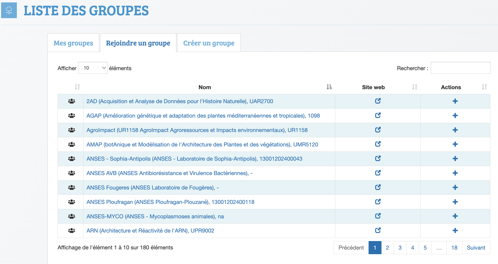

Créer un compte
The first action to sign in to Biosphere is to click on the menu "Sign in" in the top-right corner of the main page of the Biopshere portal, and then follow the guidelines. you will first create your account, and then request to activate it by joining a valid group corresponding to your affiliation/project/training. You can also join other groups afterwards according to your situation.
1. Create your account
Two options are available to create an account, use your academic credentials from your academic employer (using federated identity is recommended for better security), or create an account based on your email.
- Federated identity
We advise to use your usual academic credentials in eduGAIN where most of European universities and academic organisms are registered (more details about eduGAIN there). Biosphere will use automatically your email address and other personnal information that you authorised to transmit.
Info
In case your institution is not registered in eduGAIN, you can ask for a local Biosphere account.
- Local Biosphere account
You will have to fill the required information by hand. Especially, take care of the email address you enter because it will be use to contact you for any inquiry or announcement related to IFB-Biosphere. For example, at the second step of the account request, an email message will be sent to this email address to confirm it. In case you have not anymore access to this email address, we will not be able to join you or help you to keep access to your Biosphere cloud account.
2. Join a group
Once your account is created, you will be asked to apply to your affiliation/project/training group.

- Go to the Biosphere Groups page.
- Select the tab "Join a group".
- Search your group with the top-right field.
- Apply to join it.
Note
If your affiliation is not already registered, you may ask to create it in the tab "Add a group"
Attention
Both your request for an account and for the membership to an affiliation will be evaluate by the IFB committee before validation. Take care when you fill these two steps because it will help to keep the validation process going. In case of a clarification need, you will be contacted on the email address you enter.